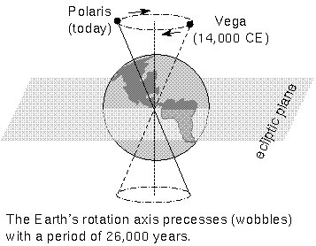
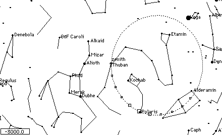

The gravity of the Moon and Sun act on the "bulge" at Earth's
equator, causing a gradual cyclical change in the direction of the
Earth's spin axis called precession. This is shown
schematically in the animation above.
Projected on the celestial sphere, the poles slowly trace out large
circles at a rate of 0.5 degree per century. It takes 26,000 years
for the poles to complete one cycle. See figure below. Though
subtle, precession was first detected in 150 BC by the Greek
astronomer Hipparchus.

Polaris is a convenient "North Pole star" now, lying about 1 degree
from the true North Celestial Pole. However, it will not be as useful
in a few 1000 years. Vega will be close to the pole 14,000 years from
now, but most of the time there is NO useful pole star.
The animation below shows
the pole position as a function of date (Note: the point labeled "zenith"
in the drawing is actually the "North Pole".)

Precession changes the location of the equinoxes as well as the
celestial poles. The vernal equinox moves from one constellation of
the Zodiac to the next in about 2000 years. Thus, precession changes the
RA,DEC coordinates of all astronomical objects. The maximum annual
change is about 10 seconds of time in RA and 20 seconds of arc in
DEC.
Because of precession, all listings of RA,DEC must have the
"epoch"---i.e. the date for which they are valid---specified. Most
listings now give epoch 2000 coordinates, though some still use
1950.
 Back to Lecture 4
Back to Lecture 4
 Lecture Index
Lecture Index